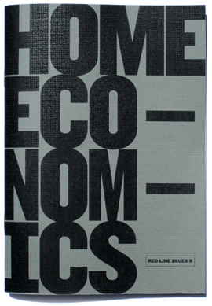

Available now in the online store.
Red Line Blues 8: Home Economics
Spring 2011
64 pages
5" x 7"
First edition of 300
Charlene Langfur — A Proposal for Saving Ourselves/
Housekeeping
Dan Cullinane — What You Mean by Living
Elizabeth O’Brien — To Sew Successfully According to
the Singer Sewing Book, Copyright 1953
B.C. Edwards — The Recipe for the Best Tuna Salad
in the World
Eleanor Bennet — [photography]
Kezia Willingham — Food Bank
Gary Rainford — Localvores
Katherine Klein — Pig in a Blanket
Zara Raab — Whiskey
Nicole Haroutunian — Peppers and Basil, Kale and Cress
Judith Tate O’Brien — Cake
Brian Brown — [photography]
Caitlin Scott — Reunion
W. G. Scherban — What Was Dirt Has Turned to Mud